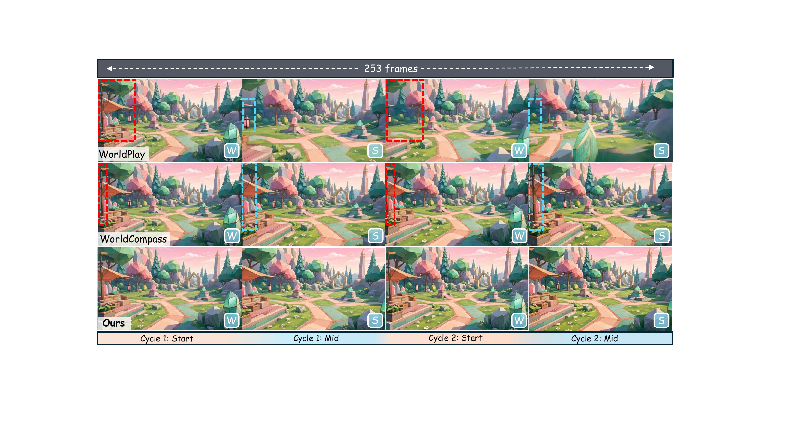
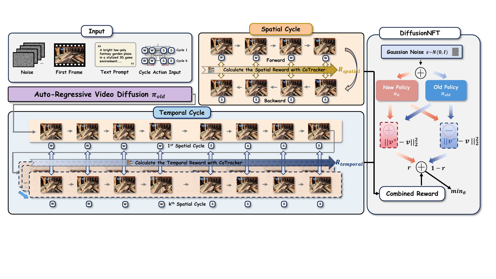
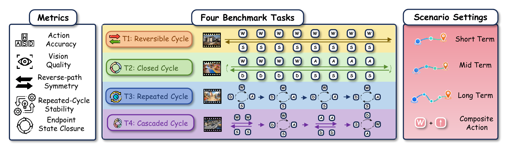
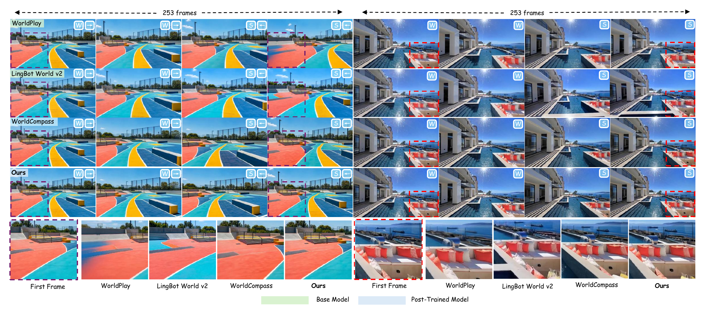
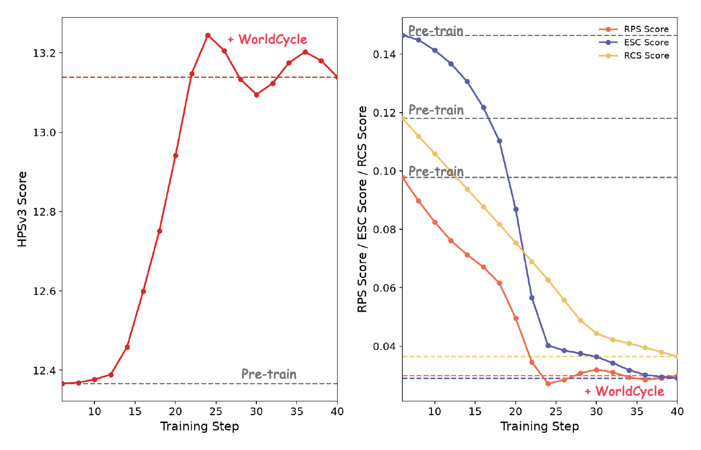

Self-verifiable reinforcement learning
WorldCycle
Self-Verifiable Reinforcement Learning for Long-Horizon Video World Models
Turn reversible action cycles into dense, annotation-free supervision for world models that remain consistent over long horizons.
closed loop
state0
returns verified
Wforward
Dturn
Sinverse
Aclose
t0
tk
drift, at best
accuracy vs. base
task families
videos required
01 / Overview
A verification signal hidden inside the action.
Interactive video world models are essential for long-horizon planning and exploration, yet they suffer from compounding errors. Reinforcement learning can improve these models, but it faces a verification bottleneck: for arbitrary action sequences, no ground-truth future state exists to measure long-term drift.
WorldCycle exploits a structural exception. A reversible action sequence composed with its inverse must analytically return to the initial state. This turns closed action cycles into annotation-free supervision on long-horizon correctness.
The framework constructs closed cycles and repeated executions from ordinary action sequences, then optimizes a spatial closure reward between mirrored forward and reverse states and a temporal consistency reward across repeated cycles.

02 / Method
Close the loop.
Close the loop.
Then learn from it.
WorldCycle turns analytically known action structure into trajectory-level rewards, making long-horizon post-training verifiable without future video labels.
Construct cycles
Compose ordinary action blocks with their inverses, then repeat the closed program across multiple temporal scales.
Verify states
Compare mirrored states within a cycle and phase-aligned states across repeated cycles to expose where drift begins.
Optimize dynamics
Use structured rewards to teach actions as consistent state operators instead of memorized temporal patterns.

RspatialSpatial closure
Every partial forward trajectory has a corresponding reverse state that should coincide with it. Dense mirrored comparisons localize drift instead of relying on one sparse endpoint.
RtemporalTemporal consistency
Repeated cycles should revisit the same phases. Comparing later executions to the first cycle penalizes position-dependent action drift over extended rollouts.
03 / CycleBench
Evaluate the model
Evaluate the model
as a simulator.
CycleBench diagnoses how transition errors accumulate when actions are reversible, repeated, composed, or cascaded.
Reversible-Cycle
Follow an action sequence, execute its inverse, and measure forward–reverse symmetry.
Closed-Cycle
Trace a non-retracing loop and evaluate whether the endpoint returns to the initial state.
Repeated-Cycle
Repeat one closed program and track phase-aligned drift across executions.
Cascaded-Cycle
Compose different closed cycles and test whether residuals propagate into later actions.

04 / Comparisons
Watch consistency
Watch consistency
survive the horizon.
Each synchronized group compares the WorldPlay base model, WorldCompass post-training, and WorldCycle under the same action program.
Videos are synchronized to the same cycle.
W + →then inverseS + ←WorldPlayBase model
WorldCompassPost-trained
WorldCycleOurs
W · A · S · Drepeated across 5 cyclesWorldPlayBase model
WorldCompassPost-trained
WorldCycleOurs
W · A · S · Dsingle closed cycleWorldPlayBase model
WorldCompassPost-trained
WorldCycleOurs
05 / Results
Lower drift.
Lower drift.
Stronger control.
WorldCycle improves state-returning consistency across horizons and generalizes to composite actions without sacrificing visual quality.
| Setting | ESC ↓ | RPS ↓ | RCS ↓ | Accuracy ↑ | HPSv3 ↑ |
|---|---|---|---|---|---|
| Short-term 125 frames | 0.026 | 0.019 | 0.020 | 0.833 | 11.24 |
| Mid-term 253 frames | 0.038 | 0.028 | 0.018 | 0.878 | 10.81 |
| Composite 125 frames | 0.057 | 0.042 | 0.026 | 0.553 | 10.42 |
| Long-term 381 frames | 0.163 | 0.087 | 0.049 | 0.095 | 10.31 |


Consistency without collapse
Better state dynamics do not trade away visual quality.
The full model reaches an HPSv3 score of 10.42 on composite actions, a 16% gain over the 8.98 base-model score reported in the ablation.
Base8.98
WorldCycle10.42
06 / Citation
Build on the
Build on the
closed loop.
Citation metadata will be updated when a public paper identifier becomes available.
BibTeX
@misc{gu_worldcycle,
title = {WorldCycle: Self-Verifiable Reinforcement Learning
for Long-Horizon Video World Models},
author = {Bohai Gu and Yueyang Yuan and Taiyi Wu and Dazhao Du
and Jian Liu and Xiaoyi Pang and Jie Zhang and Xiaocheng Lu
and Haobin Zhong and Xiaotong Zhao and Alan Zhao and Song Guo}
}